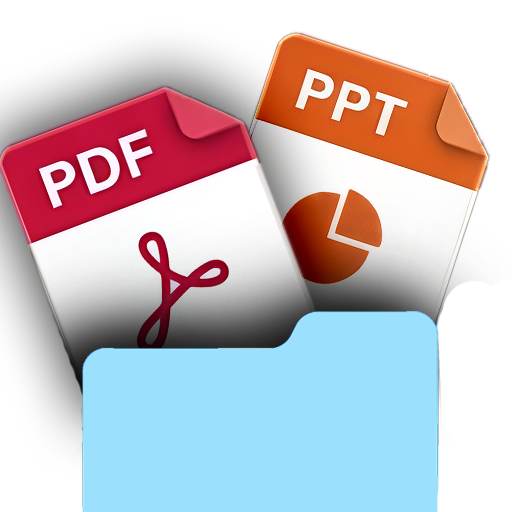
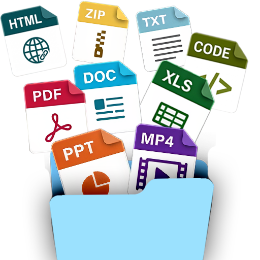
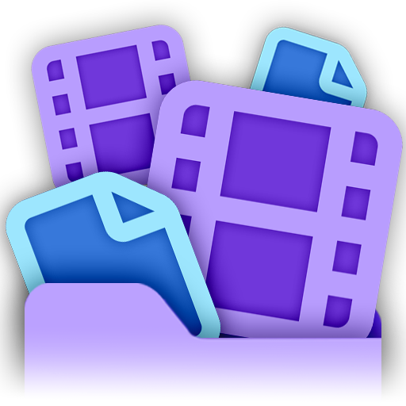
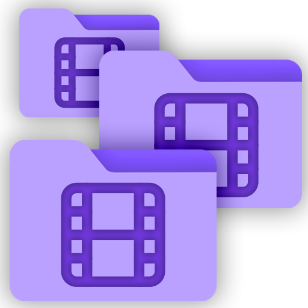
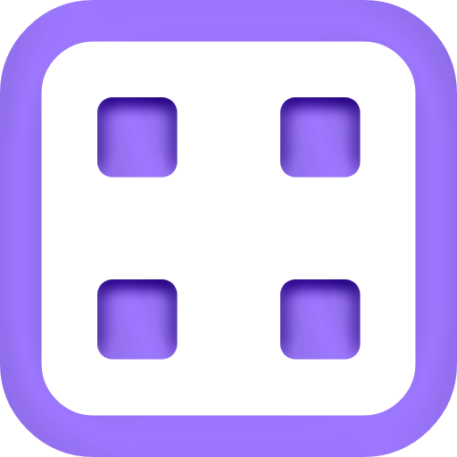

Getting Started
Connect to your Canvas account, pick the courses you need, and you're ready to download.
Your Canvas URL
To connect Canvas Downloader to your courses, you must provide your school's specific Canvas URL.
How to find your Canvas URL
1. Log in to Canvas in your web browser.
2. Examine the address bar after logging in (most schools use one of two formats):
• Format 1: canvas.[university].edu (e.g., canvas.schoolname.edu)
• Format 2: [university].instructure.com (e.g., schoolname.instructure.com)
3. Copy the base portion of the URL (including the `https://`, e.g., https://canvas.schoolname.edu or https://schoolname.instructure.com) and paste it into the app.
Important: While your university's URL (like canvas.schoolname.edu) may be accepted, pasting the real Canvas URL (ending in .instructure.com) is always the best and most reliable option to prevent login issues.
Your Canvas Access Token
Canvas Downloader uses your Canvas Access Token to access your courses - the same way Canvas' own mobile app connects. The token only grants access to your own student account: your enrolled courses, your files, and your grades. There is no way to access other students' data.
How to generate your token
1. Log in to Canvas in your browser.
2. Go to Account → Settings.
3. Scroll down to Approved Integrations and click "+ New Access Token".
4. Give it a name (e.g. "Canvas Downloader"), leave the expiry blank, and click Generate Token.
5. Copy the token and paste it into the app.
Selecting Courses
Once connected, the app loads your full course list. You can toggle between Favorites Only (courses you starred in Canvas) and All Courses. Select as many courses as you want - the app processes them all in one batch, creating a separate folder for each.
Quick Download
Pick a ready-made preset and start downloading in seconds. No manual configuration needed - each preset is tuned for a specific use case.
After selecting your courses, click Quick Download. You'll see five presets - each one is a complete, pre-configured setup covering which files to download, how to organize them, and which conversions to run. Pick the one that fits, choose a folder, and hit Start Download.
The 5 Presets


Folder Organisation
Every preset lets you choose how files are saved on your computer. Picking a preset pre-selects the layout it was designed around - NotebookLM Ready starts on All in One Folder, everything else on With Subfolders - but that is only a starting point. Neither is locked: change the folder option after picking a preset and your choice is what gets used.
 With Subfolders
With Subfolders
Mirrors the Canvas module layout. Each module becomes its own subfolder - e.g. CHEM101 / Week 3 / lecture.pdf. Recommended for courses with many files.
 All in One Folder
All in One Folder
All files go directly in the course folder with no subfolders. Best for flat setups or AI tools that need all files in one place.
Custom Download
Accessed via the Custom Download button from the course list. Configure exactly what files to grab, how to organize them, whether to convert them for AI tools, and which lecture recordings to save - across four independent cards.
Which conversions replace your original file?Most of them delete the original once converted. See the full list before you turn them on.Card 1 - Course Files & Organization
This is the only required card. Choose what to download and how to organize it on your computer.
 All Files
All Files
Downloads everything your professor uploaded: PDFs, PowerPoint slides, Word documents, images, videos, spreadsheets, zip archives, and more. Best if you want a complete offline copy of your course.
 Slides & PDFs
Slides & PDFs
Downloads only PowerPoint slide decks and PDF documents - and nothing else. Use this if you want to skip large videos or data sets and just get the core study materials. Note: Word documents are not included, so if your reading list is a .docx, choose All Files instead.
With Subfolders
Mirrors the Canvas module layout on your computer. Each module becomes its own subfolder - for example: CHEM101 / Week 3 / lecture.pdf. Recommended for courses with many files.
All in One Folder
Puts every file directly in the course folder with no subfolders. Easier to search everything at once, but can get cluttered for larger courses.
Card 2 - Canvas Content
Optional. These are things that only exist as web pages inside Canvas - the app converts them into local files you can open offline or upload to AI tools. Your regular course files are always downloaded regardless of these settings.
What you can download
 Assignments - Full instructions, due dates, and any attached files saved as a file.
Assignments - Full instructions, due dates, and any attached files saved as a file. Syllabus - Grading policies, office hours, and weekly schedules.
Syllabus - Grading policies, office hours, and weekly schedules. Announcements - All course announcements in order. Great for finding deadline changes.
Announcements - All course announcements in order. Great for finding deadline changes. Discussions - Discussion board threads, useful if your professor posts key content there.
Discussions - Discussion board threads, useful if your professor posts key content there. Quizzes - Quiz questions and answer choices (visibility depends on your professor's settings).
Quizzes - Quiz questions and answer choices (visibility depends on your professor's settings). Submissions (Results) - Feedback and grades you received on your own submitted work. Your professor is not notified.
Submissions (Results) - Feedback and grades you received on your own submitted work. Your professor is not notified.
Match Course Folder
Places Canvas Content files alongside your regular course files in the same module subfolders.
 In Separate Folders
In Separate Folders
Creates a dedicated subfolder per content type (Assignments/, Quizzes/, Discussions/, etc.) inside the course folder.
Card 3 - AI Optimization
Optional. After downloading finishes, the app can automatically convert your files into formats that work best with AI study tools like NotebookLM, ChatGPT, or Claude. Each conversion only touches the file types it handles - all others are left unchanged.
Available conversions
 Unpack Archives - Extracts .zip, .tar and .tar.gz files so the contents are immediately accessible. Most AI tools cannot read archives directly. Nothing inside an archive is converted - it comes out exactly as your teacher packed it, so a code project stays a working project.
Unpack Archives - Extracts .zip, .tar and .tar.gz files so the contents are immediately accessible. Most AI tools cannot read archives directly. Nothing inside an archive is converted - it comes out exactly as your teacher packed it, so a code project stays a working project. PowerPoint → PDF - Converts slide decks to PDF. Original is replaced. Requires the Microsoft PowerPoint desktop app.
PowerPoint → PDF - Converts slide decks to PDF. Original is replaced. Requires the Microsoft PowerPoint desktop app. Legacy Word → PDF - Converts old .doc / .rtf / .odt formats to PDF. Modern .docx files are not affected.
Legacy Word → PDF - Converts old .doc / .rtf / .odt formats to PDF. Modern .docx files are not affected. Excel → PDF & Data - Creates a visual PDF plus a plain text data file holding every cell value (Budget.xlsx becomes Budget.pdf + Budget_Data.txt). The original spreadsheet is replaced. Legacy .xls files get the PDF only.
Excel → PDF & Data - Creates a visual PDF plus a plain text data file holding every cell value (Budget.xlsx becomes Budget.pdf + Budget_Data.txt). The original spreadsheet is replaced. Legacy .xls files get the PDF only. Canvas Pages → Plain Text - Strips web formatting from Canvas pages, making them easy for AI tools.
Canvas Pages → Plain Text - Strips web formatting from Canvas pages, making them easy for AI tools. Code & Data → .txt - Turns 50+ code and data formats into plain text for AI tools that refuse anything else. The dot becomes an underscore - analysis.py becomes analysis_py.txt - so the original type stays visible in the name and can never collide with a .txt that was already there. The original is replaced.
Code & Data → .txt - Turns 50+ code and data formats into plain text for AI tools that refuse anything else. The dot becomes an underscore - analysis.py becomes analysis_py.txt - so the original type stays visible in the name and can never collide with a .txt that was already there. The original is replaced. Gather Web Links - Collects every .url / .webloc shortcut into one Compiled_External_Links.txt per course, and removes the shortcuts. Keeps NotebookLM from choking on files it cannot read.
Gather Web Links - Collects every .url / .webloc shortcut into one Compiled_External_Links.txt per course, and removes the shortcuts. Keeps NotebookLM from choking on files it cannot read. Video → Audio - Extracts audio as MP3, typically 10-20x smaller. Original video is replaced.
Video → Audio - Extracts audio as MP3, typically 10-20x smaller. Original video is replaced.
Card 4 - Panopto Lecture Recordings
Optional. Some courses record their lectures and attach them in Canvas as Panopto links. They're useful - but watching back hours of video is slow, and the recordings aren't in a format you can hand to an AI study tool. Canvas Downloader solves both: it automatically finds those Panopto links and saves each recording right inside your course folder, as video or audio you can watch or listen to whenever you want, plus locally-generated transcripts and subtitles that make every lecture AI-ready.
What you can save for each lecture
 Video (MP4) - the full lecture video (combined screen + camera). Best for watching offline; can be large. No setup needed.
Video (MP4) - the full lecture video (combined screen + camera). Best for watching offline; can be large. No setup needed. Audio (MP3) - just the audio track, far smaller than video - great for re-listening or feeding to AI tools. No setup needed.
Audio (MP3) - just the audio track, far smaller than video - great for re-listening or feeding to AI tools. No setup needed. Transcript (.txt) - a written transcript of the spoken lecture, perfect for AI tools. Needs a transcription model (see below).
Transcript (.txt) - a written transcript of the spoken lecture, perfect for AI tools. Needs a transcription model (see below). Subtitles (.srt) - timestamped captions you can load alongside the video. Needs a transcription model (see below).
Subtitles (.srt) - timestamped captions you can load alongside the video. Needs a transcription model (see below).

Match Course Folder structureSaves each recording alongside your course files - in its module subfolder (subfolder mode) or the course root (flat mode).

In Separate FoldersGroups all lectures into a dedicated “Panopto Recordings” folder inside the course, one subfolder per recording.
Recordings are fetched in three clear phases you'll see on the progress screen: discover every lecture, download the media, then transcribe each one. They are also fully supported in Sync Mode - new lectures show up in your sync like any other file, and a recording you've deleted locally is respected and never re-downloaded unless you ask.
One thing to read first
The very first time you start a download or sync that includes lecture recordings, the app stops and shows you a short notice. It's worth thirty seconds of your time, so here's what it says.
Panopto's player has a download button that your university or your lecturer can switch on or off, per folder or per recording - and many universities just leave it off everywhere without anyone ever deciding anything about a particular lecture. Canvas Downloader doesn't read that setting. It saves the same video stream the player is already sending to your browser, whether or not the button is shown to you. Nothing is broken or bypassed to do that - the app signs in as you, with your own account - but it does mean saving a recording could go against your university's IT rules even though you're perfectly allowed to watch it.
So you get the choice, and it's a real one:
Your two buttons
- I understand - continue - recordings download as configured. You're only asked once; the app remembers your answer.
- Continue without recordings - the run starts immediately and does everything else exactly as normal, just without the lectures. This only applies to that one run, so the next sync will ask again. Your saved settings aren't changed.
Setting up transcription (.txt & .srt)
To turn lectures into transcripts and subtitles, you download a small speech-recognition model once - it then lives on your computer and works offline forever. You only need this if you want .txt or .srt; video and audio never require it. Here's the whole flow:
Step by step
- Open the setup dialog. In Custom Download → Card 4, tick Transcript and/or Subtitles, then click Set up transcription. The panopto configuration page can also be accessed through the Settings.
- Pick the spoken language. Choose the language spoken in your lectures (Danish, English, German, and more), or leave it on Auto-detect. Picking the exact language is a little more accurate than auto-detect.
- Choose the compute device. CPU works on every computer. GPU is far faster but is only available on Windows PCs with an NVIDIA graphics card - on a Mac, transcription always uses the CPU (which is plenty fast on Apple Silicon). The dialog shows a Detected Hardware panel so you can see exactly what was found.
- (Windows + NVIDIA only) Enable GPU acceleration. If your GPU is detected but its CUDA libraries are missing, the dialog offers a one-click Download CUDA libraries & enable GPU button (about 1.3 GB, one time, no admin rights needed). If your graphics driver is too old, it tells you to update it first.
- Download a model. In the Available Models list, click Download next to a model. Small is the recommended choice on CPU; Large v3 Turbo is recommended if you have a GPU. Bigger models are more accurate but slower and larger on disk.
- Activate it & close. Once downloaded, click Activate (the active model shows a green Active badge), then Done. That's it - the setup is saved.
Which model should I pick?
- Tiny / Base - fastest, lowest accuracy. Good for a quick test or very slow machines.
- Small - the balanced, recommended choice on CPU. Great accuracy for its speed.
- Medium - more accurate, noticeably slower on CPU.
- Large v3 - the most accurate (best for languages like Danish), but really wants a GPU.
- Large v3 Turbo - near-Large accuracy, much faster. The recommended pick when you have a GPU.
Where it runs
Transcription happens entirely on your machine using faster-whisper - no internet needed after the model is downloaded, and nothing is ever uploaded. Once a model is set up, any recording configured for .txt/.srt is transcribed automatically on your next download or sync. Already downloaded lectures without transcripts? Just install a model and they'll be picked up and transcribed on the next sync.
 Download Presets
Download Presets
A Preset saves your entire Card 1, 2, 3 and 4 configuration - including your Panopto recording formats - under a name and description you choose, and optionally the output folder too. Once saved, you can restore your full setup in one click instead of re-configuring everything from scratch.
Saving a Preset
Configure Cards 1-4, then click Save Preset in the top right. Give it a name - like AI Ready - add a short description if you want, tick the box if you'd like it to remember your output folder too, and click Save. Everything is stored locally on your computer.
 Loading a Preset
Loading a Preset
Click the Presets button in the top right. The Preset Hub opens - click any preset name to instantly apply its settings to all four cards. The Hub also holds the same five built-in presets you get from Quick Download, so you can start from one and tweak it.
Sync Mode
Sync Mode intelligently tracks your download history and only fetches what is new or changed - so your folders stay current all semester.
How does a folder remember its own settings?Why syncing never asks you to reconfigure anything - and why it has no settings screen. Course Pairs
Course Pairs
A Course Pair permanently links a Course Folder on your computer (e.g. Documents\CHEM101) to its matching Canvas course. Click Add Course on the Sync page to create a pair. Once linked, syncing will automatically process every pair on your list.
The Hidden Database
Inside every synced folder, the app places a tiny, hidden database file. This acts as the folder's memory - tracking what you've already downloaded, what you've edited, and what to skip. If you link a pre-existing folder, the app scans Canvas and builds this memory from scratch.
Syncing & Download Configuration
Courses inherit their original download configuration. If you initially downloaded a course with AI Optimization enabled, the sync engine will automatically apply those same conversions to any new files you sync.
The same goes for Panopto lecture recordings: the folder remembers which formats it was set up with (video / audio / transcript / subtitles), and every new lecture is fetched in exactly that configuration - so you never have to reconfigure a sync.
Want to change any of it? Re-download the course into a new folder with your preferred configuration. A sync will never restructure a folder underneath you.
Managing Your Course Pairs
Each course pair card on your list has inline actions:
- Open Folder - Instantly opens the local course folder in your file explorer.
- Edit - Change the course's display name or update the folder path (e.g. if you moved the folder).
- Ignored Files - View, manage, and restore any files you permanently skipped.
- Remove - Removes the course from the sync list. This will never delete your local files.

 Quick Sync vs Analyze & Review
Quick Sync vs Analyze & Review
Both modes scan Canvas - the difference is how much control you have over what gets downloaded.
Quick Sync All
- ✓ Auto-downloads all new files
- ✓ Auto-updates unedited files
- ✓ Quick & easy - one button
- ✓ Skips ignored, locally deleted, & edited files automatically
- x No per-file selection
- x No preview of changes
Best for: Quick catch-ups between lectures, morning file checks - whenever you need the latest files as fast as possible.
Analyze, Review & Sync
- ✓ Full overview of all changes across 7 categories
- ✓ Select per-file what to download
- ✓ Ignore or restore files for future syncs
- ✓ Filter by file extension
- ✓ Confirmation screen before downloading
- x Takes more time than Quick Sync
Best for: Exam prep, study blocks, or whenever you want full control and a complete picture of what changed.
When to use which - examples
- Checking for new files between classes → Quick Sync
- Start-of-week catch-up → Quick Sync
- Before an exam, ensure folders are fully up to date → Analyze, Review & Sync
- You have been editing files locally → Analyze, Review & Sync
- First time setting up a new course folder → Analyze, Review & Sync
Quick Sync workflow:
Click Quick Sync All
Analysis scans Canvas and compares every file to your local course folder. Looks for all new or updated files.
Downloading
New files and clean updates download automatically. Files you've edited or deleted are skipped. Watch the progress on the dashboard.
Done!
Your course folders are fully up to date. See which files were downloaded, retry any failures, and open folders directly.
Analyze, Review & Sync workflow:
Analyze
Scans Canvas and sorts all files into 7 categories.
Review
Select files to download, deselect what you don't need, ignore files permanently.
Confirm
A pop-up shows everything that will be downloaded. Confirm or go back.
Download
Selected files download. Watch progress on the dashboard.
Done!
Folders are up to date. Review results and retry any failures.
 Saved Groups & Pairs
Saved Groups & Pairs
The Saved Groups & Pairs hub lets you save your course pairs so you only have to set them up once. Load them in one click any time you return.
Save a Pair
After adding a pair to the Sync List, click the save icon on the pair card. Give it a name, and save it. It's now stored in the hub and can be loaded in a single click in any future session.

Save a GroupA Group is a named collection of multiple pairs - e.g. all your semester courses. Add all pairs to the sync list, then click Save Group. You need at least 2 pairs to save a group.
Load from the Hub
Click Saved Groups & Pairs in the top right. Browse your saved groups and individual pairs. Click any entry to load it onto the sync page instantly. You can load multiple groups one after another to build a combined list. Both Pairs and Groups can be viewed and edited - change names, update folder paths, or add new pairs to a group, all from the hub.
Safety Guarantees
Syncing is designed to be totally safe. The app guarantees:
Never overwrites your edits - updated files you annotated get a _NewVersion copy alongside your original.
Never deletes local files - not even when the teacher removes them from Canvas. Your disk is yours.
Never re-downloads files you deleted - unless you explicitly opt in via the review page.
Never creates duplicates - every file is tracked. Re-downloads overwrite cleanly or produce a clearly-named _NewVersion.
Never touches files outside your course folder - only operates inside folders you explicitly link.
Treats lecture recordings the same way - Panopto recordings sync like any other file: new lectures are added, ones you deleted locally are left alone, and any you ignore stay hidden.
Sync History
The Sync History expander at the bottom of the Sync page is your sync journal - a rolling log of your most recent sync runs, so you can always see exactly when and how your Course Folders were modified, and which files failed to download.
Reading the log
Each entry shows the date and time, which courses were synced, the total files downloaded, and a color-coded status badge:
- Success - synced with no issues.
- Errors - some files failed to sync.
- No Changes - everything was already fully up to date.
Click any run to expand it and see what happened to individual files, sorted by category - new files added, updates overwritten, locally-deleted files you chose to restore, modified files protected with a _NewVersion copy, and any Panopto recordings fetched.
Filtering & controls
- View All - every sync run across all your courses, chronologically.
- By Course - pick a course from the dropdown to see only its runs.
- Clear History - permanently deletes all history entries.
How many runs are kept is configurable in Settings → Preferences (10-500, default 50) - older entries are trimmed automatically.
Sync Review
When you use Analyze & Review, every file is sorted into one of 7 categories. You have full control over exactly what gets downloaded.
What does sync do in every situation?All six categories, what each one does on your disk, and which are unchecked by default.The 7 File Categories
After analysis, every file is placed into one of these categories. This determines the default action the app takes.
New Files
Files on Canvas added by your teacher that are not in your course folder yet.
Downloaded fresh into the correct subfolder.
Checked by defaultUpdates (Clean)
Canvas has a newer version, and you haven't edited your local copy.
Replaced in place with the newest version - same name, same location.
Checked by defaultUpdates (You Edited)
Canvas has a newer version, and you've modified your local copy (e.g. added annotations).
New version saved as filename_NewVersion alongside your original. Your edits are never touched.
Unchecked by defaultDeleted Locally
You deleted a file from your folder, but Canvas still has it.
Your deletion is respected - won't redownload unless you explicitly check the box. Quick Sync always skips these.
Unchecked by defaultDeleted on Canvas
The teacher removed a file from Canvas, but it is still in your course folder.
Your local copy stays exactly where it is. The app never deletes local files.
Info only - no actionIgnored Files
Files you permanently skipped, so they never appear in future syncs.
Restore them any time in the Ignored Files section.
Permanent skipUp to Date
File is identical on both sides - your local file matches Canvas.
Hidden from the review screen since no action is needed.
Hidden - nothing to doReview Tools
The review page gives you powerful tools to manage large course updates:
The Selection Process
Every file on the review screen is either checked or unchecked.
- Checked files - Will be downloaded or updated during this sync. Once synced, they won't appear again until the teacher updates them.
- Unchecked files - Will not be downloaded. However, they will reappear in your next sync. If you never want to see an unchecked file again, you must Ignore it.
UI Tools Explained
- Smart Select (by filetype) - Tag buttons group every file by extension (e.g. .pdf, .docx). Click a tag to instantly toggle all files of that type across all courses.
- Select All / Deselect All - One-click bulk actions to check or uncheck every visible file.
- Select All / Deselect All here - Scoped actions at the top of each category to check or uncheck only the files within that specific category of a course.
- The Ignore icon - Hover over any file row and click the eye icon to move it to the Ignored section. Ignored files are permanently hidden from future syncs.
- Move deselected to Ignored - Sits at the top of every category. Click it to sweep every unchecked file in that list into your permanent Ignored bucket.
- The Restore icon - Inside the Ignored Files category, click the restore arrow next to a file, or use "Restore All" to bring them back into active sync.
Your Step-by-Step Workflow
- 1. Review Categories - Expand the file categories to see which files are new, updated, or deleted.
- 2. Smart Select - Use the filetype filters to instantly check or uncheck entire types (e.g. all PDFs, no MP4s).
- 3. Customize - Manually check specific files, use "Select All here" / "Deselect All here" for category-wide toggles, or uncheck those you don't need right now.
- 4. Clean Up (Optional) - Click "Move deselected files to Ignored" to permanently skip files you left unchecked.
- 5. Confirm & Download - Click the primary button at the bottom to execute your choices.
The Today Page
A daily dashboard that keeps your courses up to date on autopilot - and shows you exactly which files arrived today.
The Today page (first item in the sidebar) is built around one idea: you shouldn't have to think about syncing at all. Pick the courses you care about once, switch on daily sync, and from then on the app fetches everything new by itself - you just glance at the page to see what landed.
Setting it up
- Add your courses. The Today page imports course/folder pairs from your Saved Groups & Pairs hub - pick which ones should be part of your daily set. Your selection is saved and can be edited any time, independently of the hub.
- Toggle daily sync on. That's it - no schedule to configure.
Daily Auto-Sync
With daily sync enabled, the app automatically runs a Quick Sync of your chosen courses the first time you open it each day (a "day" rolls over at 4 AM, so a late-night session doesn't count as tomorrow). It runs quietly as a slim progress bar right on the page - no wizard, no takeover - and posts a notification when it's done. It follows the exact same safety rules as any Quick Sync: only new files and clean updates are downloaded, and your edited or deleted files are never touched.
Today's Files
Below the toggle, the page lists every file downloaded today, grouped per course - the same interactive folder cards you see on the sync completion screen, so you can open a file or its folder with one click. Panopto lecture recordings fetched by the sync show up here too. If nothing new arrived, you get a friendly "all caught up" instead. The list covers the page's own syncs (the daily auto-sync and Quick Syncs), so it always answers the one question that matters in the morning: what's new for me today?
Settings
Fine-tune how the app behaves - download speed, file size limits, where things are saved, notifications, lecture recordings, and more.
Open Settings from the button at the bottom of the sidebar. Everything here is application-wide: any setting you change applies to every activity in the app - all Quick and Custom downloads, and every sync - not just your next one. Each option can be freely toggled on or off (or adjusted) at any time, and your choices are saved and remembered between sessions. Settings are sensible by default, so you can ignore this screen entirely until you want to change something.
Download Options
These four settings shape how files are fetched - for both downloads and syncs.
download_errors.txt into each output folder, summarising any files that failed to download or convert - handy for spotting exactly what didn't come through after a big batch. This card also houses Save debug log, a verbose debug_log.txt meant only for troubleshooting; leave it off for normal use.
Default Save Location
Sets the folder that's pre-filled as the output location for every new download, so you don't have to pick it manually each time. Leave it blank to fall back to your system's Downloads folder. You can still change the destination on any individual download - this just sets the starting point.
Preferences
Smaller quality-of-life options that affect how the app looks, notifies you, and organises your files.
Panopto lecture recordings
The master switch for the whole lecture-recording feature. Leave it on and the app looks for Panopto recordings in your courses and offers them as downloads. Turn it off and the search is skipped entirely - no recordings in any download or sync, no acceptable-use prompt, and downloads finish a little faster. This is the permanent “no thanks”, if you never want lecture recordings.
You usually won't need to touch it: the app checks once per session whether your university actually has Panopto set up, and quietly skips the search if it doesn't. The card tells you which it found.
Panopto Transcription Engine
Opens the configuration for the local engine that turns Panopto recordings into Transcripts (.txt) and Subtitles (.srt) - the model size, the spoken language, and the compute device (CPU or GPU). These choices are shared across every download and sync, and everything runs entirely on your own machine: nothing is ever uploaded. Configuring it here is just a shortcut so you can set it up without starting a download first.
Engine vs. output: this only sets up how transcription runs. The decision of whether to actually produce transcripts or subtitles for a given batch lives in Custom Download → Panopto, alongside the video/audio output choices.
App health record
A short log the app keeps by itself of startups, shutdowns and memory use. If Canvas Downloader ever closes unexpectedly or starts behaving oddly, download this file and attach it to your bug report - it's often the only trace a crash leaves behind. It contains no personal data, access tokens, course names or file names, and it is never uploaded anywhere. Use Download record to save a copy, or Show in Explorer / Reveal in Finder to find it on disk.
Frequently Asked Questions
Quick answers to the most common questions about Canvas Downloader.
Can the app sync my courses automatically every day?
Yes. On the Today page, pick your courses and switch on daily sync. The first time you open the app each day, it runs a Quick Sync of those courses by itself and lists the files that arrived today, per course. See The Today Page.
What is the difference between Download Mode and Sync Mode?
Download Mode fetches a complete copy of everything you asked for, every time - it doesn't check what it grabbed last time. Sync Mode compares your Course Folder against Canvas first and only fetches what's new or changed. Use Download Mode for a first-time copy; use Sync Mode to keep it current.
Either way, a download does leave a memory behind: it writes the same small hidden database into the course folder, recording which file is which and the settings you picked. That's what lets you link the folder in Sync Mode later and have it pick up exactly where you left off, with the same layout and conversions.
What is the difference between Quick Download and Custom Download?
Quick Download uses one of five ready-made presets - pick a preset, choose a folder, and start. Custom Download gives you full control over every setting: which file types to include, which Canvas web content to save, and which AI conversions to run. Both use the same download engine and produce identical results for the same settings.
What happens to my edits if I sync an updated file?
Your edits are 100% safe. The app downloads the new Canvas version and saves it as filename_NewVersion alongside your original. Your annotated file is never overwritten.
Why are some files unchecked by default?
The app protects your intentional actions. Files you've edited locally are unchecked to avoid cluttering your folder with _NewVersion files unless you explicitly ask. Files deleted locally are unchecked because your deletion is respected.
If I uncheck a file, will it ask me again next time?
Yes. Unchecking means "skip for today." The file is still pending sync and will show up on the review screen next time. To permanently skip it, use the Ignore icon or the "Move deselected to Ignored" button.
I renamed or moved a file locally - will sync break?
No. The app automatically detects renamed and moved files using content fingerprinting. You can rename and reorganize freely - no duplicates, no broken tracking.
Will a file show as updated if the teacher only changed its description?
No. The app compares file content fingerprints, not just timestamps. If the actual file content hasn't changed, it stays in Up to Date - no phantom updates.
Will Sync re-download files I already have?
No. The app scans your existing folder and automatically recognizes files you already have using a smart algorithm. They are marked as Up to Date - no wasted bandwidth.
I moved my course folder to a different drive. Will sync still work?
Click the edit icon on the pair and re-select the folder at its new location. The hidden database lives inside the folder, so all sync history is preserved automatically.
If I enable PowerPoint to PDF, does the original get deleted?
Yes - the original is replaced by the PDF. Same for Legacy Word to PDF, Excel to PDF, and Video to Audio.
What does Submissions (Results) save, and will my professor know?
It saves feedback and grades you received on your own submitted work - professor comments, grading scores, and your grade per assignment. This is your personal data. Your professor is not notified.
Do the AI conversions work on all computers?
It depends. PowerPoint, Word, and Excel → PDF conversions require the matching Microsoft Office desktop app. Archives, Canvas pages, code files, web links, video-to-audio, and Excel data-text extraction work everywhere with no extra software.